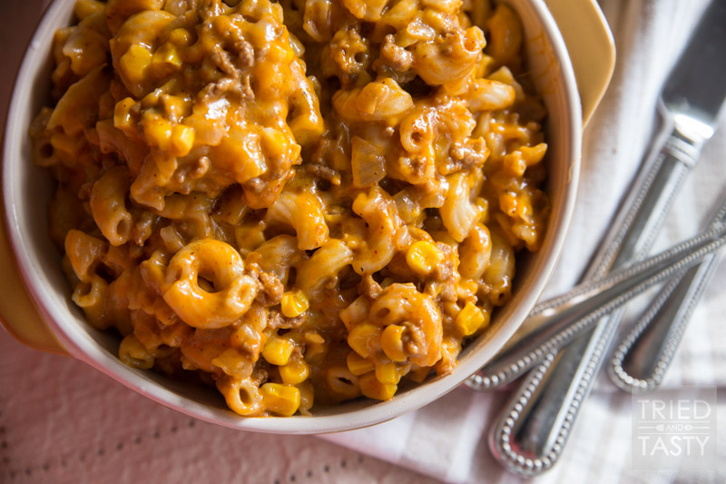

Lasagna

| Ingredients | Directions |
|---|---|
| 1 pound lean ground beef | Step 1: Cook beef in a large skillet over medium heat, stirring until it crumbles and is no longer pink; drain. Stir in pasta sauce. |
| 4 cups tomato-basil pasta sauce | Step 2:1/3 of meat sauce in a lightly greased 11- x 7-inch baking dish; layer with 3 noodles and half each ricotta and mozzarella cheese. Repeat procedure. Slowly pour 1/4 cup hot water around edge of dish. Tightly cover baking dish with 2 layers of heavy-duty foil. |
| 6 uncooked lasagna noodles | step 3: Bake at 375° for 45 minutes; uncover and bake 10 more minutes. Let stand 10 minutes before serving. |
| 1 (15-ounce) container ricotta cheese | |
| 2 1/2 (10 ounces) shredded mozzarella cheese | |
| 1/4 cup hot water |
Alfredo
| Ingredients | Directions |
|---|---|
| 1 lb. box of fettuccini noodles, cooked. | Cook pasta while making Alfredo sauce, rinse well and set aside. |
| 4 tbs butter or stick margarine | Melt the butter over medium high heat in a heavy bottomed medium sized saucepan |
| 3 tbs flour | Add salt, pepper and flour to the pan. Whisk until smooth and the rue turns a pale brown. |
| 1 tsp salt | Slowly pour milk and whisk until combined. |
| 1/2 tsp pepper | Add 1/2 cup of Parmesan cheese, continue to whisk until cheese melts into the mixture and becomes smooth. |
| 2 cups milk | Dip a spoon in a taste. Adjust seasoning and cheese if needed. If the Parmesan flavoring is too weak add 1/4 to 1/2 more to the pot and continue to whisk. |
| 1/2 to 3/4 a cup of grated Parmesan cheese or a Parmesan cheese blend | Continue to cook over medium heat, whisking until the sauce becomes thick. |
| Once thickened remove from the heat. Pour over pasta and mix well. | |
| Serve immediantly | |
| Sauce will thicken as it cooks | |
| If the sauce thickens too much thin with a small amount of milk. |
Beef-Enchiladas
| Ingredients | Directions | 1 lb lean (at least 80%) ground beef | Heat oven to 375°F. Spray 13x9-inch (3-quart) baking dish or pan with cooking spray. |
|---|---|
| 2 cans (10 oz each) Old El Paso™ enchilada sauce | In 10-inch nonstick skillet, cook beef over medium-high heat 5 to 7 minutes, stirring occasionally, until thoroughly cooked; drain. Stir in 1/2 cup of the enchilada sauce and the chiles. |
| 1 can (4.5 oz) Old El Paso™ chopped green chiles | Spread 1/2 cup of the enchilada sauce evenly in baking dish. Spread 1/4 cup beef mixture down center of each tortilla; sprinkle with 1 tablespoon cheese. Wrap tortillas tightly around filling, placing seam side down in baking dish. Top with remaining enchilada sauce. Sprinkle with remaining cheese. |
| 1 package (8.2 oz) Old El Paso™ flour tortillas for soft tacos & fajitas (6 inch) | Bake 20 to 25 minutes or until hot and bubbly. Let stand 5 minutes before serving; add Make it FRESH toppings. |
| 1 1/2 cups shredded Cheddar cheese (6 oz) |
Chicken-tacos
| Ingredients | Directions |
|---|---|
| 1 tablespoon oil | Heat oil in large skillet on medium heat. Add chicken; cook and stir 3 to 5 minutes or until no longer pink. |
| 1 pound boneless skinless chicken breasts, cut into 1/2-inch strips | Stir in in Seasoning Mix and water. |
| 1 package McCormick® Chicken Taco Seasoning Mix | Bring to boil. Reduce heat to low; simmer 5 to 7 minutes or until most of liquid is absorbed and chicken is cooked through, stirring occasionally. Spoon into warm taco shells. Serve with desired toppings. |
| 1/2 cup water | |
| 12 taco shells |
Hamburger-Casserole
| Ingredients | Directions |
|---|---|
| 1 pound lean ground beef | Preheat oven to 350 degrees F (175 degrees C). |
| 3 cups peeled and thinly sliced potatoes | In a medium skillet over medium heat, brown the ground beef; drain fat. |
| 1 (10.75 ounce) can condensed cream of mushroom soup | In a medium mixing bowl, combine cream of mushroom soup, onion, milk, salt and pepper to taste. |
| 1/2 cup chopped onion | Alternately layer the potatoes, soup mixture and meat in a 11x7 inch (2 quart) baking dish. Bake in the preheated oven for 1 to 1 1/2 hours, or until potatoes are tender. Top with Cheddar cheese, and continue baking until cheese is melted. |
| 3/4 cup milk | |
| salt to taste | |
| freshly ground pepper, to taste | |
| 1 cup shredded Cheddar cheese |